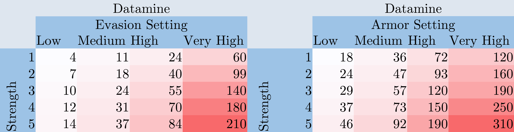
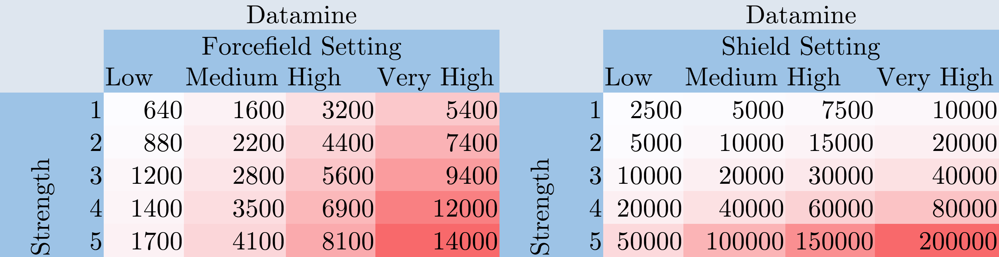
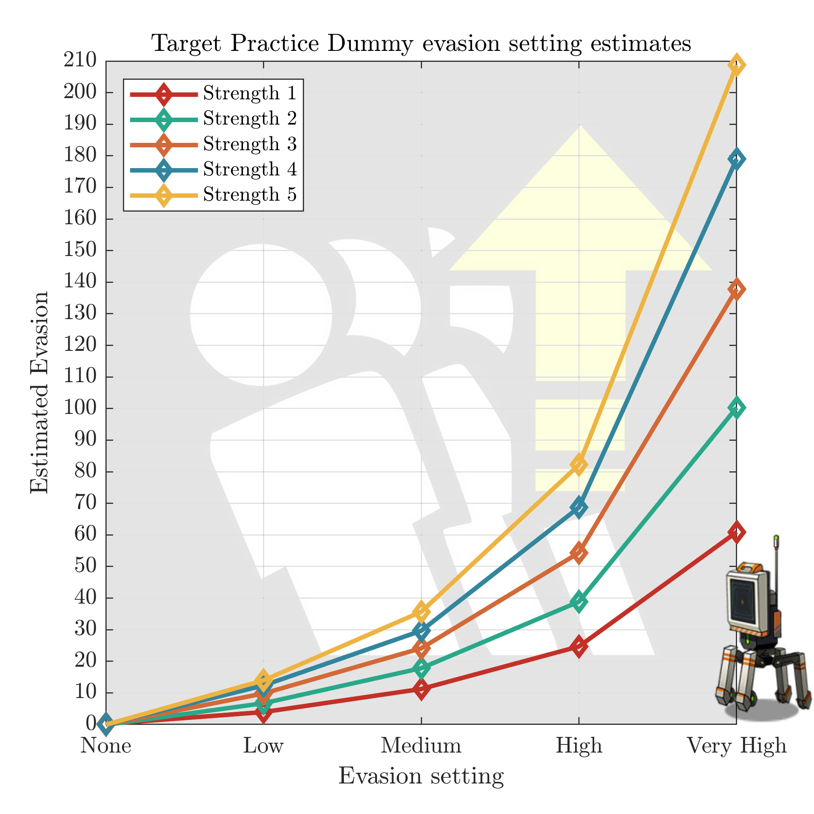
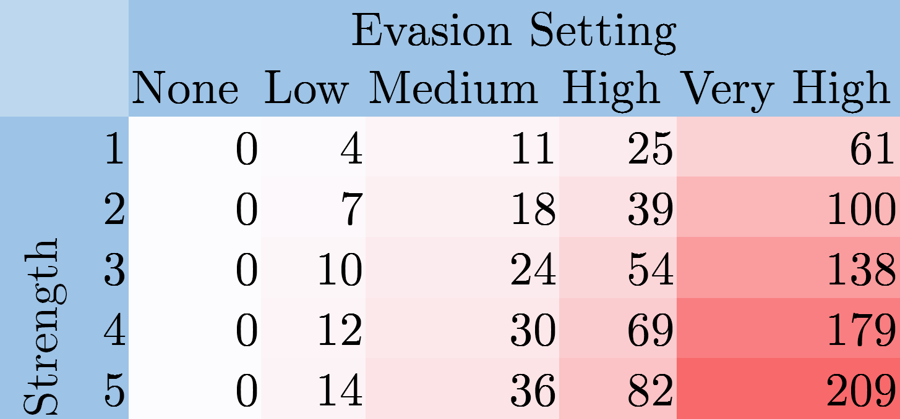
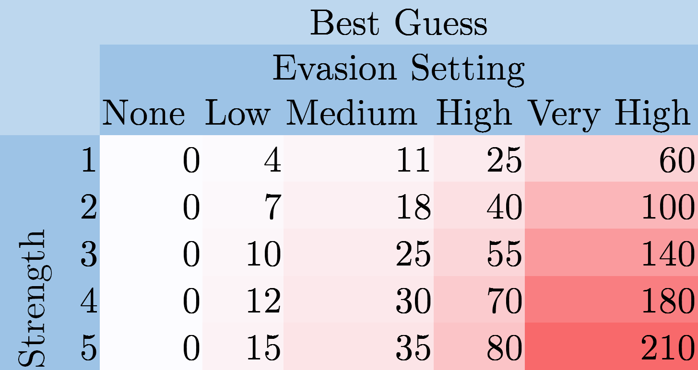
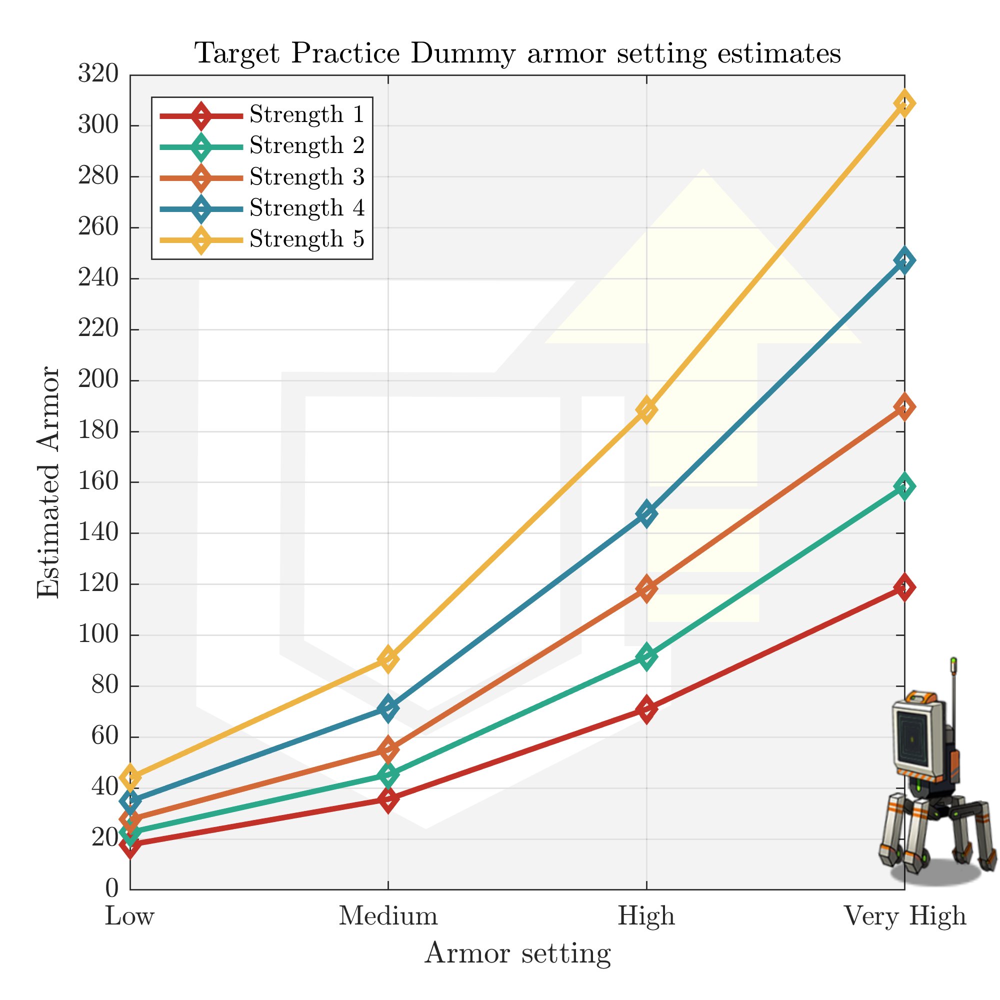
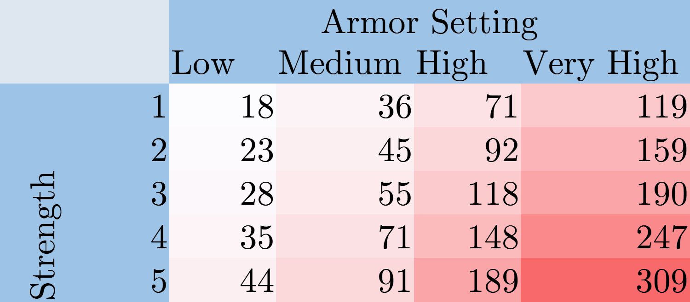
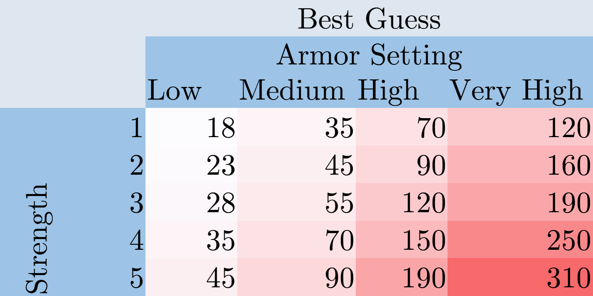
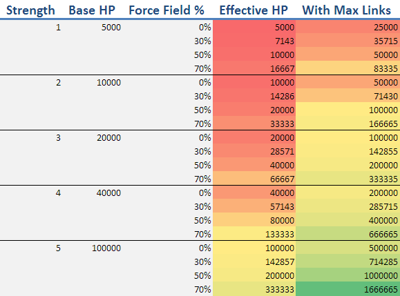

Update 2021-03-09: Turns out that these values have already been datamined, so the exact values are known. In table form:


The forcefield/HP shield can be gotten pretty easily (the results screen tells you how much of each you destroyed) but here they are for reference. As my plots/guesses are quite close, I'll leave them up for your viewing pleasure.
Evasion#
A while back, I realized the total damage dealt statistic in target practice was very useful. With it, you can often calculate some unknown variable in combat. For example, I used this in my analysis of X95's skill/equipment to determine the average effective damage boost from her skill.
Another application, if you know everything about the doll shooting, is to calculate unknown stats of your target. Let's start with evasion. If you want to test your team's performance against enemies with no evasion, it's easy to set this up - just pick "None." Common SF are close enough to "Low" that the precise numbers aren't a big deal. But what if you want to get some numbers against enemies like Scouts? SF bosses like Dreamer with 60+ evasion? Even some of the newer KCCO/Paradeus enemies come with lots of it.
As it turns out, to further complicate matters, the dummy's evasion varies not only by setting but by strength. After letting some dolls shoot it for 300 seconds each and doing a little math, here are the averaged results for each combination:



Interestingly, the "Very High" setting doesn't take long to go beyond almost any normal enemy - Scouts tend to cap out around 80 EVA, and most of the more dodgy Paradeus/KCCO sit around 50-60 EVA. On the other hand, even the highest setting still falls short of a Patroller's evasive mode, where their evasion jumps into the thousands.
Armor#
Using the same idea, the value of each armor setting can be estimated at each strength. The formula is slightly more complicated due to crits and AP, but works out in the end:



Though not to the same extent as with evasion, Strength 4+ "Very High" armor is a fair bit beyond any enemy seen so far. Theater Uhlans, for example, stop at 229 armor. Almost all other enemies don't pass 200, and are easily pierced by fully enhanced AP ammo.
But if you ever wanted to know what 300 armor was like, here's the place for that.
Effective HP#
An interesting consequence of this is that the table I made before on setting combinations to get different amounts of effective HP (from here) are less straightforward if you want to target a specific evasion as well.

For example, if you want a tough dummy (HP>100000) and around 50 evasion, no evasion setting at Strength 5 is very close. Medium evasion is around 35, and High jumps up to 80 EVA. Strength 3/High evasion would be your closest bet, where you then need to use a 5-linked dummy and adjust force field percent.
Other comments
Results were averaged across 5-6 dolls for each point, and there was very little variation between dolls at each setting.